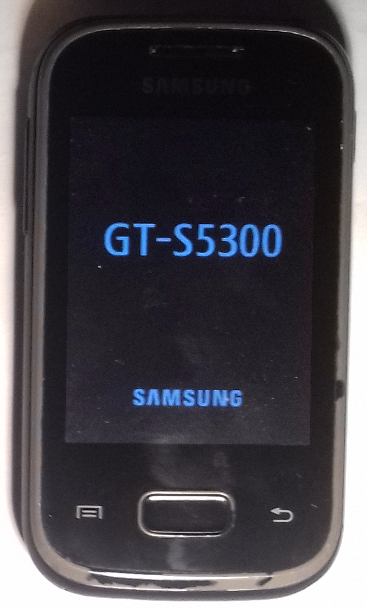

Samsung Galaxy Pocket (samsung-s5300)
Jump to navigation
Jump to search
|
 Bootloader image. That's as far as it will get. | |
| Manufacturer | Samsung |
|---|---|
| Name | Galaxy Pocket |
| Codename | cori |
| Released | 2012 |
| Category | testing |
| Original software | Android 2.3.6 GingerBread with TouchWiz |
| Hardware | |
| Chipset | Broadcom BCM21550 |
| GPU | VideoCore IV |
| Display | 320*480 |
| Architecture | armhf |
{kind=link}
This device is marked as not booting.
Status: Kernel compiles, but doesn't boot (stuck on bootloader logo)
Status: Kernel compiles, but doesn't boot (stuck on bootloader logo)
| USB Networking | |
|---|---|
| Flashing | |
| Touchscreen | |
| Display | |
| WiFi | |
| FDE | |
| Mainline | |
| Battery | |
| 3D Acceleration | |
| Audio | |
| Bluetooth | |
| Camera | |
| GPS | |
| Mobile data | |
| SMS | |
| Calls | |
| USB OTG / USB-C Role switching | |
| NFC | |
| Accelerometer | |
|---|---|
| Magnetometer | |
| Ambient Light | |
| Proximity | |
| Hall Effect | |
| Barometer | |
| Power Sensor | |
| Camera Flash | |
|---|---|
| Keyboard | |
| Touchpad | |
| USB-A | |
| HDMI/DP | |
| Ir TX | |
| Ir RX | |
| Stylus | |
| Haptics | |
| Ethernet | |
| FOSS bootloader | |
Contributors
- Mis012(since this is armv6 device, I will probably not continue working on this, contact me if you're interested, and I'll share my aports/device/*-samsung-s5300)
Maintainer
Device owners
What works
- Kernel compiles
What does not work
- Kernel (stuck at bootloader logo)
How to enter flash mode
Volume down + Home while powering up
Installation
- enter flash mode
- try to flash boot.img with Heimdall
Troubleshooting Installation
- clone Heimdall sources from https://gitlab.com/BenjaminDobell/Heimdall.git
- follow this advice: https://github.com/Benjamin-Dobell/Heimdall/issues/340
- build Heimdall
- flash boot.img with your newly compiled Heimdall (to KERNEL partition. DEFINITELY NOT TO "BOOT" partition, that's BOOTloader)
- make sure to reboot after every unsuccessful attempt
Partition layout
| /dev/block/* | PIT id | partition name | offset | size | purpose | format |
|---|---|---|---|---|---|---|
| none | 1 | BOOT | 0B | 512B | primary bootloader | ¨\_/('-')\_/¨ |
| none | 0 | GANG | 512B | 512B | ¨\_/('-')\_/¨ | ¨\_/('-')\_/¨ |
| mmcblk0p1 | 2 | SBL1 | 1024B | 4096B | Samsung secondary bootloader | ¨\_/('-')\_/¨ |
| mmcblk0p2 | 3 | SBL2 | 5120B | 4096B | usually almost same as SBL1 | ¨\_/('-')\_/¨ |
| mmcblk0p3 | 4 | modem | 9216B | 25600B | something to do with GPS | ¨\_/('-')\_/¨ |
| mmcblk0p4 | 5 | PARAM | 34816B | 10240B | contains data for SBL | j4fs filesystem |
| mmcblk0p5 | 6 | KERNEL | 45056B | 10240B | kernel, ramdisk & recovery ramdisk | android boot image |
| mmcblk0p6 | 7 | boot_backup | 55296B | 10240B | just zeros ¨\_/('-')\_/¨ | ¨\_/('-')\_/¨ |
| mmcblk0p7 | 8 | system | 65536B | 614400B | android /system | ext4 filesystem |
| mmcblk0p8 | 9 | CSC | 679936B | 204800B | android /cache | ext4 filesystem |
| mmcblk0p9 | 10 | userdata | 884736B | 2097152B | android /data | ext4 filesystem |
| mmcblk0p10 | 11 ! | efs | 2981888B | 20480B | stores IMEI etc. | ¨\_/('-')\_/¨ ❕must be copied with dd (count,skip) |
| mmcblk0p11 | 12 | UMS | 3002368B | 4604895B | android /sdcard | vfat filesystem |
| mmcblk0p12 | 13 ! | Reserved | 7607263B | 20480B | ¨\_/('-')\_/¨ | ¨\_/('-')\_/¨ ❕must be copied with dd (count,skip) |
| mmcblk0p13 | 14 | sysparm_dep | 7627743B | 512B | ¨\_/('-')\_/¨ | probably just binary data in random places |
| mmcblk0p14 | 15 | RF_CAL_FILE | 7628255B | 512B | ¨\_/('-')\_/¨ | ¨\_/('-')\_/¨ |
| mmcblk0p15 | 16 | cal | 7628767B | 2048B | ¨\_/('-')\_/¨ | ¨\_/('-')\_/¨ |
| mmcblk0p16 | 17 | S-GPT | 7630815B | 33B | some sort of partition table? | if it was GPT, file(1) would recognize it, right? |
If you wish to help with analysis: http://Mis012.nejlepsiserialy.cz/nextcloud/index.php/s/5jL92J6rL6LbMR8 (images extracted with binwalk, PARAM mounted within CWM; efs and Reserved dd'd from /dev/block/mmcblk0, mmcblk0p10 is all zeros. 'security' :P)
See also
- downstream kernel I used
- service manual, most useful is the block diagram with part names
- https://www.ebay.com/itm/USB-Micro-B-Plug-Breakout-Module-for-Arduino-Connector-Adapter-with-Pin/322604640134 - cheapest thing with µUSB plug on one end and 100% all 5 pins connected to something
(if you dare solder to the plug itself, you can get 10 for $1 it would seem)
- https://datasheet.octopart.com/FSA880UMX-ON-Semiconductor-datasheet-86696689.pdf - The IC used for detecting resistor value between USB_ID and USB_GND. Not as full-featured as the mighty FSA9480, but as can be seen in the service manual, it is indeed connected to UART. EDIT: JTAG-[Rx/Tx] seems to be connected to the same lines, so if you solder to corresponding pads near tag you can use usb at the same time.
- https://forum.xda-developers.com/showthread.php?t=820275 - FSA9480 info, and some ways Samsung utilizes it. Some values are certainly off, but there could be some similarities in the 'Unknown Accessory' territory, i.e. 121K and 150K relate to UART, which we have. EDIT: may not apply to all muxes: And of course that one can only switch the MUX manually over I²C, so that would explain why the Primary Bootloader log isn't there - it might not speak i2c!